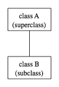
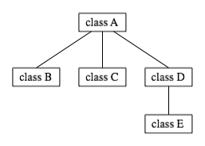
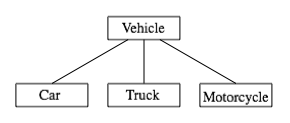
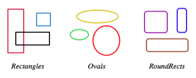
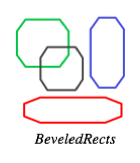

Section 5.5
Inheritance, Polymorphism, and Abstract Classes
A class represents a set of objects which share the same structure and behaviors. The class determines the structure of objects by specifying variables that are contained in each instance of the class, and it determines behavior by providing the instance methods that express the behavior of the objects. This is a powerful idea. However, something like this can be done in most programming languages. The central new idea in object-oriented programming -- the idea that really distinguishes it from traditional programming -- is to allow classes to express the similarities among objects that share some, but not all, of their structure and behavior. Such similarities can be expressed using inheritance and polymorphism.
5.5.1 Extending Existing Classes
The topics covered later in this section are relatively advanced aspects of object-oriented programming. Any programmer should know what is meant by subclass, inheritance, and polymorphism. However, it will probably be a while before you actually do anything with inheritance except for extending classes that already exist. In the first part of this section, we look at how that is done.
In day-to-day programming, especially for programmers who are just beginning to work with objects, subclassing is used mainly in one situation: There is an existing class that can be adapted with a few changes or additions. This is much more common than designing groups of classes and subclasses from scratch. The existing class can be extended to make a subclass. The syntax for this is
public class subclass-name extends existing-class-name { . . // Changes and additions. . }
As an example, suppose you want to write a program that plays the card game, Blackjack. You can use the Card, Hand, and Deck classes developed in Section 5.4. However, a hand in the game of Blackjack is a little different from a hand of cards in general, since it must be possible to compute the "value" of a Blackjack hand according to the rules of the game. The rules are as follows: The value of a hand is obtained by adding up the values of the cards in the hand. The value of a numeric card such as a three or a ten is its numerical value. The value of a Jack, Queen, or King is 10. The value of an Ace can be either 1 or 11. An Ace should be counted as 11 unless doing so would put the total value of the hand over 21. Note that this means that the second, third, or fourth Ace in the hand will always be counted as 1.
One way to handle this is to extend the existing Hand class by adding a method that computes the Blackjack value of the hand. Here's the definition of such a class:
public class BlackjackHand extends Hand {
/**
* Computes and returns the value of this hand in the game
* of Blackjack.
*/
public int getBlackjackValue() {
int val; // The value computed for the hand.
boolean ace; // This will be set to true if the
// hand contains an ace.
int cards; // Number of cards in the hand.
val = 0;
ace = false;
cards = getCardCount();
for ( int i = 0; i < cards; i++ ) {
// Add the value of the i-th card in the hand.
Card card; // The i-th card;
int cardVal; // The blackjack value of the i-th card.
card = getCard(i);
cardVal = card.getValue(); // The normal value, 1 to 13.
if (cardVal > 10) {
cardVal = 10; // For a Jack, Queen, or King.
}
if (cardVal == 1) {
ace = true; // There is at least one ace.
}
val = val + cardVal;
}
// Now, val is the value of the hand, counting any ace as 1.
// If there is an ace, and if changing its value from 1 to
// 11 would leave the score less than or equal to 21,
// then do so by adding the extra 10 points to val.
if ( ace == true && val + 10 <= 21 )
val = val + 10;
return val;
} // end getBlackjackValue()
} // end class BlackjackHand
Since BlackjackHand is a subclass of Hand, an object of type BlackjackHand contains all the instance variables and instance methods defined in Hand, plus the new instance method named getBlackjackValue(). For example, if bjh is a variable of type BlackjackHand, then the following are all legal: bjh.getCardCount(), bjh.removeCard(0), and bjh.getBlackjackValue(). The first two methods are defined in Hand, but are inherited by BlackjackHand.
Inherited variables and methods from the Hand class can also be used in the definition of BlackjackHand (except for any that are declared to be private, which prevents access even by subclasses). The statement "cards = getCardCount();" in the above definition of getBlackjackValue() calls the instance method getCardCount(), which was defined in Hand.
Extending existing classes is an easy way to build on previous work. We'll see that many standard classes have been written specifically to be used as the basis for making subclasses.
Access modifiers such as public and private are used to control access to members of a class. There is one more access modifier, protected, that comes into the picture when subclasses are taken into consideration. When protected is applied as an access modifier to a method or member variable in a class, that member can be used in subclasses -- direct or indirect -- of the class in which it is defined, but it cannot be used in non-subclasses. (There is one exception: A protected member can also be accessed by any class in the same package as the class that contains the protected member. Recall that using no access modifier makes a member accessible to classes in the same package, and nowhere else. Using the protected modifier is strictly more liberal than using no modifier at all: It allows access from classes in the same package and from subclasses that are not in the same package.)
When you declare a method or member variable to be protected, you are saying that it is part of the implementation of the class, rather than part of the public interface of the class. However, you are allowing subclasses to use and modify that part of the implementation.
For example, consider a PairOfDice class that has instance variables die1 and die2 to represent the numbers appearing on the two dice. We could make those variables private to make it impossible to change their values from outside the class, while still allowing read access through getter methods. However, if we think it possible that PairOfDice will be used to create subclasses, we might want to make it possible for subclasses to change the numbers on the dice. For example, a GraphicalDice subclass that draws the dice might want to change the numbers at other times besides when the dice are rolled. In that case, we could make die1 and die2 protected, which would allow the subclass to change their values without making them public to the rest of the world. (An even better idea would be to define protected setter methods for the variables. A setter method could, for example, ensure that the value that is being assigned to the variable is in the legal range 1 through 6.)
5.5.2 Inheritance and Class Hierarchy
The term inheritance refers to the fact that one class can inherit part or all of its structure and behavior from another class. The class that does the inheriting is said to be a subclass of the class from which it inherits. If class B is a subclass of class A, we also say that class A is a superclass of class B. (Sometimes the terms derived class and base class are used instead of subclass and superclass; this is the common terminology in C++.) A subclass can add to the structure and behavior that it inherits. It can also replace or modify inherited behavior (though not inherited structure). The relationship between subclass and superclass is sometimes shown by a diagram in which the subclass is shown below, and connected to, its superclass.
In Java, to create a class named "B" as a subclass of a class named "A", you would write
class B extends A {
.
. // additions to, and modifications of,
. // stuff inherited from class A
.
}

Several classes can be declared as subclasses of the same superclass. The subclasses, which might be referred to as "sibling classes," share some structures and behaviors -- namely, the ones they inherit from their common superclass. The superclass expresses these shared structures and behaviors. In the diagram to the left, classes B, C, and D are sibling classes. Inheritance can also extend over several "generations" of classes. This is shown in the diagram, where class E is a subclass of class D which is itself a subclass of class A. In this case, class E is considered to be a subclass of class A, even though it is not a direct subclass. This whole set of classes forms a small class hierarchy.
5.5.3 Example: Vehicles
Let's look at an example. Suppose that a program has to deal with motor vehicles, including cars, trucks, and motorcycles. (This might be a program used by a Department of Motor Vehicles to keep track of registrations.) The program could use a class named Vehicle to represent all types of vehicles. Since cars, trucks, and motorcycles are types of vehicles, they would be represented by subclasses of the Vehicle class, as shown in this class hierarchy diagram:

The Vehicle class would include instance variables such as registrationNumber and owner and instance methods such as transferOwnership(). These are variables and methods common to all vehicles. The three subclasses of Vehicle -- Car, Truck, and Motorcycle -- could then be used to hold variables and methods specific to particular types of vehicles. The Car class might add an instance variable numberOfDoors, the Truck class might have numberOfAxles, and the Motorcycle class could have a boolean variable hasSidecar. (Well, it could in theory at least, even if it might give a chuckle to the people at the Department of Motor Vehicles.) The declarations of these classes in a Java program would look, in outline, like this (although in practice, they would probably be public classes, defined in separate files):
class Vehicle {
int registrationNumber;
Person owner; // (Assuming that a Person class has been defined!)
void transferOwnership(Person newOwner) {
. . .
}
. . .
}
class Car extends Vehicle {
int numberOfDoors;
. . .
}
class Truck extends Vehicle {
int numberOfAxles;
. . .
}
class Motorcycle extends Vehicle {
boolean hasSidecar;
. . .
}
Suppose that myCar is a variable of type Car that has been declared and initialized with the statement
Car myCar = new Car();
Given this declaration, a program could refer to myCar.numberOfDoors, since numberOfDoors is an instance variable in the class Car. But since class Car extends class Vehicle, a car also has all the structure and behavior of a vehicle. This means that myCar.registrationNumber, myCar.owner, and myCar.transferOwnership() also exist.
Now, in the real world, cars, trucks, and motorcycles are in fact vehicles. The same is true in a program. That is, an object of type Car or Truck or Motorcycle is automatically an object of type Vehicle too. This brings us to the following Important Fact:
A variable that can hold a reference
to an object of class A can also hold a reference
to an object belonging to any subclass of A.
The practical effect of this in our example is that an object of type Car can be assigned to a variable of type Vehicle. That is, it would be legal to say
Vehicle myVehicle = myCar;
or even
Vehicle myVehicle = new Car();
After either of these statements, the variable myVehicle holds a reference to a Vehicle object that happens to be an instance of the subclass, Car. The object "remembers" that it is in fact a Car, and not just a Vehicle. Information about the actual class of an object is stored as part of that object. It is even possible to test whether a given object belongs to a given class, using the instanceof operator. The test:
if (myVehicle instanceof Car) ...
determines whether the object referred to by myVehicle is in fact a car.
On the other hand, the assignment statement
myCar = myVehicle;
would be illegal because myVehicle could potentially refer to other types of vehicles that are not cars. This is similar to a problem we saw previously in Subsection 2.5.6: The computer will not allow you to assign an int value to a variable of type short, because not every int is a short. Similarly, it will not allow you to assign a value of type Vehicle to a variable of type Car because not every vehicle is a car. As in the case of ints and shorts, the solution here is to use type-casting. If, for some reason, you happen to know that myVehicle does in fact refer to a Car, you can use the type cast (Car)myVehicle to tell the computer to treat myVehicle as if it were actually of type Car. So, you could say
myCar = (Car)myVehicle;
and you could even refer to ((Car)myVehicle).numberOfDoors. As an example of how this could be used in a program, suppose that you want to print out relevant data about a vehicle. You could say:
System.out.println("Vehicle Data:");
System.out.println("Registration number: "
+ myVehicle.registrationNumber);
if (myVehicle instanceof Car) {
System.out.println("Type of vehicle: Car");
Car c;
c = (Car)myVehicle;
System.out.println("Number of doors: " + c.numberOfDoors);
}
else if (myVehicle instanceof Truck) {
System.out.println("Type of vehicle: Truck");
Truck t;
t = (Truck)myVehicle;
System.out.println("Number of axles: " + t.numberOfAxles);
}
else if (myVehicle instanceof Motorcycle) {
System.out.println("Type of vehicle: Motorcycle");
Motorcycle m;
m = (Motorcycle)myVehicle;
System.out.println("Has a sidecar: " + m.hasSidecar);
}
Note that for object types, when the computer executes a program, it checks whether type-casts are valid. So, for example, if myVehicle refers to an object of type Truck, then the type cast (Car)myVehicle would be an error. When this happes, an exception of type ClassCastException is thrown.
5.5.4 Polymorphism
As another example, consider a program that deals with shapes drawn on the screen. Let's say that the shapes include rectangles, ovals, and roundrects of various colors. (A "roundrect" is just a rectangle with rounded corners.)

Three classes, Rectangle, Oval, and RoundRect, could be used to represent the three types of shapes. These three classes would have a common superclass, Shape, to represent features that all three shapes have in common. The Shape class could include instance variables to represent the color, position, and size of a shape, and it could include instance methods for changing the color, position, and size. Changing the color, for example, might involve changing the value of an instance variable, and then redrawing the shape in its new color:
class Shape {
Color color; // Color of the shape. (Recall that class Color
// is defined in package java.awt. Assume
// that this class has been imported.)
void setColor(Color newColor) {
// Method to change the color of the shape.
color = newColor; // change value of instance variable
redraw(); // redraw shape, which will appear in new color
}
void redraw() {
// method for drawing the shape
? ? ? // what commands should go here?
}
. . . // more instance variables and methods
} // end of class Shape
Now, you might see a problem here with the method redraw(). The problem is that each different type of shape is drawn differently. The method setColor() can be called for any type of shape. How does the computer know which shape to draw when it executes the redraw()? Informally, we can answer the question like this: The computer executes redraw() by asking the shape to redraw itself. Every shape object knows what it has to do to redraw itself.
In practice, this means that each of the specific shape classes has its own redraw() method:
class Rectangle extends Shape {
void redraw() {
. . . // commands for drawing a rectangle
}
. . . // possibly, more methods and variables
}
class Oval extends Shape {
void redraw() {
. . . // commands for drawing an oval
}
. . . // possibly, more methods and variables
}
class RoundRect extends Shape {
void redraw() {
. . . // commands for drawing a rounded rectangle
}
. . . // possibly, more methods and variables
}
If oneShape is a variable of type Shape, it could refer to an object of any of the types, Rectangle, Oval, or RoundRect. As a program executes, and the value of oneShape changes, it could even refer to objects of different types at different times! Whenever the statement
oneShape.redraw();
is executed, the redraw method that is actually called is the one appropriate for the type of object to which oneShape actually refers. There may be no way of telling, from looking at the text of the program, what shape this statement will draw, since it depends on the value that oneShape happens to have when the program is executed. Even more is true. Suppose the statement is in a loop and gets executed many times. If the value of oneShape changes as the loop is executed, it is possible that the very same statement "oneShape.redraw();" will call different methods and draw different shapes as it is executed over and over. We say that the redraw() method is polymorphic. A method is polymorphic if the action performed by the method depends on the actual type of the object to which the method is applied. Polymorphism is one of the major distinguishing features of object-oriented programming.
Perhaps this becomes more understandable if we change our terminology a bit: In object-oriented programming, calling a method is often referred to as sending a message to an object. The object responds to the message by executing the appropriate method. The statement "oneShape.redraw();" is a message to the object referred to by oneShape. Since that object knows what type of object it is, it knows how it should respond to the message. From this point of view, the computer always executes "oneShape.redraw();" in the same way: by sending a message. The response to the message depends, naturally, on who receives it. From this point of view, objects are active entities that send and receive messages, and polymorphism is a natural, even necessary, part of this view. Polymorphism just means that different objects can respond to the same message in different ways.
One of the most beautiful things about polymorphism is that it lets code that you write do things that you didn't even conceive of, at the time you wrote it. Suppose that I decide to add beveled rectangles to the types of shapes my program can deal with. A beveled rectangle has a triangle cut off each corner:

To implement beveled rectangles, I can write a new subclass, BeveledRect, of class Shape and give it its own redraw() method. Automatically, code that I wrote previously -- such as the statement oneShape.redraw() -- can now suddenly start drawing beveled rectangles, even though the beveled rectangle class didn't exist when I wrote the statement!
In the statement "oneShape.redraw();", the redraw message is sent to the object oneShape. Look back at the method from the Shape class for changing the color of a shape:
void setColor(Color newColor) {
color = newColor; // change value of instance variable
redraw(); // redraw shape, which will appear in new color
}
A redraw message is sent here, but which object is it sent to? Well, the setColor method is itself a message that was sent to some object. The answer is that the redraw message is sent to that same object, the one that received the setColor message. If that object is a rectangle, then it is the redraw() method from the Rectangle class that is executed. If the object is an oval, then it is the redraw() method from the Oval class. This is what you should expect, but it means that the "redraw();" statement in the setColor() method does not necessarily call the redraw() method in the Shape class! The redraw() method that is executed could be in any subclass of Shape.
Again, this is not a real surprise if you think about it in the right way. Remember that an instance method is always contained in an object. The class only contains the source code for the method. When a Rectangle object is created, it contains a redraw() method. The source code for that method is in the Rectangle class. The object also contains a setColor() method. Since the Rectangle class does not define a setColor() method, the source code for the rectangle's setColor() method comes from the superclass, Shape, but the method itself is in the object of type Rectangle. Even though the source codes for the two methods are in different classes, the methods themselves are part of the same object. When the rectangle's setColor() method is executed and calls redraw(), the redraw() method that is executed is the one in the same object.
5.5.5 Abstract Classes
Whenever a Rectangle, Oval, or RoundRect object has to draw itself, it is the redraw() method in the appropriate class that is executed. This leaves open the question, What does the redraw() method in the Shape class do? How should it be defined?
The answer may be surprising: We should leave it blank! The fact is that the class Shape represents the abstract idea of a shape, and there is no way to draw such a thing. Only particular, concrete shapes like rectangles and ovals can be drawn. So, why should there even be a redraw() method in the Shape class? Well, it has to be there, or it would be illegal to call it in the setColor() method of the Shape class, and it would be illegal to write "oneShape.redraw();", where oneShape is a variable of type Shape. The compiler would complain that oneShape is a variable of type Shape and there's no redraw() method in the Shape class.
Nevertheless the version of redraw() in the Shape class itself will never actually be called. In fact, if you think about it, there can never be any reason to construct an actual object of type Shape! You can have variables of type Shape, but the objects they refer to will always belong to one of the subclasses of Shape. We say that Shape is an abstract class. An abstract class is one that is not used to construct objects, but only as a basis for making subclasses. An abstract class exists only to express the common properties of all its subclasses. A class that is not abstract is said to be concrete. You can create objects belonging to a concrete class, but not to an abstract class. A variable whose type is given by an abstract class can only refer to objects that belong to concrete subclasses of the abstract class.
Similarly, we say that the redraw() method in class Shape is an abstract method, since it is never meant to be called. In fact, there is nothing for it to do -- any actual redrawing is done by redraw() methods in the subclasses of Shape. The redraw() method in Shape has to be there. But it is there only to tell the computer that all Shapes understand the redraw message. As an abstract method, it exists merely to specify the common interface of all the actual, concrete versions of redraw() in the subclasses of Shape. There is no reason for the abstract redraw() in class Shape to contain any code at all.
Shape and its redraw() method are semantically abstract. You can also tell the computer, syntactically, that they are abstract by adding the modifier "abstract" to their definitions. For an abstract method, the block of code that gives the implementation of an ordinary method is replaced by a semicolon. An implementation must be provided for the abstract method in any concrete subclass of the abstract class. Here's what the Shape class would look like as an abstract class:
public abstract class Shape {
Color color; // color of shape.
void setColor(Color newColor) {
// method to change the color of the shape
color = newColor; // change value of instance variable
redraw(); // redraw shape, which will appear in new color
}
abstract void redraw();
// abstract method -- must be defined in
// concrete subclasses
. . . // more instance variables and methods
} // end of class Shape
Once you have declared the class to be abstract, it becomes illegal to try to create actual objects of type Shape, and the computer will report a syntax error if you try to do so.
Recall from Subsection 5.3.3 that a class that is not explicitly declared to be a subclass of some other class is automatically made a subclass of the standard class Object. That is, a class declaration with no "extends" part such as
public class myClass { . . .
is exactly equivalent to
public class myClass extends Object { . . .
This means that class Object is at the top of a huge class hierarchy that includes every other class. (Semantially, Object is an abstract class, in fact the most abstract class of all. Curiously, however, it is not declared to be abstract syntactially, which means that you can create objects of type Object. What you would do with them, however, I have no idea.)
Since every class is a subclass of Object, a variable of type Object can refer to any object whatsoever, of any type. Java has several standard data structures that are designed to hold Objects, but since every object is an instance of class Object, these data structures can actually hold any object whatsoever. One example is the "ArrayList" data structure, which is defined by the class ArrayList in the package java.util. (ArrayList is discussed more fully in Section 7.3.) An ArrayList is simply a list of Objects. This class is very convenient, because an ArrayList can hold any number of objects, and it will grow, when necessary, as objects are added to it. Since the items in the list are of type Object, the list can actually hold objects of any type.
A program that wants to keep track of various Shapes that have been drawn on the screen can store those shapes in an ArrayList. Suppose that the ArrayList is named listOfShapes. A shape, oneShape, can be added to the end of the list by calling the instance method "listOfShapes.add(oneShape);". The shape can be removed from the list with the instance method "listOfShapes.remove(oneShape);". The number of shapes in the list is given by the function "listOfShapes.size()". And it is possible to retrieve the i-th object from the list with the function call "listOfShapes.get(i)". (Items in the list are numbered from 0 to listOfShapes.size() - 1.) However, note that this method returns an Object, not a Shape. (Of course, the people who wrote the ArrayList class didn't even know about Shapes, so the method they wrote could hardly have a return type of Shape!) Since you know that the items in the list are, in fact, Shapes and not just Objects, you can type-cast the Object returned by listOfShapes.get(i) to be a value of type Shape:
oneShape = (Shape)listOfShapes.get(i);
Let's say, for example, that you want to redraw all the shapes in the list. You could do this with a simple for loop, which is lovely example of object-oriented programming and of polymorphism:
for (int i = 0; i < listOfShapes.size(); i++) {
Shape s; // i-th element of the list, considered as a Shape
s = (Shape)listOfShapes.get(i);
s.redraw(); // What is drawn here depends on what type of shape s is!
}
The sample source code file ShapeDraw.java uses an abstract Shape class and an ArrayList to hold a list of shapes. The file defines an applet in which the user can add various shapes to a drawing area. Once a shape is in the drawing area, the user can use the mouse to drag it around.
You might want to look at this file, even though you won't be able to understand all of it at this time. Even the definitions of the shape classes are somewhat different from those that I have described in this section. (For example, the draw() method has a parameter of type Graphics. This parameter is required because of the way Java handles all drawing.) I'll return to this example in later chapters when you know more about GUI programming. However, it would still be worthwhile to look at the definition of the Shape class and its subclasses in the source code. You might also check how an ArrayList is used to hold the list of shapes.
Here is the applet that is defined by ShapeDraw.java:
If you click one of the buttons along the bottom of this applet, a shape will be added to the screen in the upper left corner of the applet. The color of the shape is given by the "pop-up menu" in the lower right. Once a shape is on the screen, you can drag it around with the mouse. A shape will maintain the same front-to-back order with respect to other shapes on the screen, even while you are dragging it. However, you can move a shape out in front of all the other shapes if you hold down the shift key as you click on it.
In the applet the only time when the actual class of a shape is used is when that shape is added to the screen. Once the shape has been created, it is manipulated entirely as an abstract shape. The routine that implements dragging, for example, works only with variables of type Shape. As the Shape is being dragged, the dragging routine just calls the Shape's draw method each time the shape has to be drawn, so it doesn't have to know how to draw the shape or even what type of shape it is. The object is responsible for drawing itself. If I wanted to add a new type of shape to the program, I would define a new subclass of Shape, add another button to the applet, and program the button to add the correct type of shape to the screen. No other changes in the programming would be necessary.